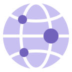
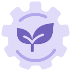

채용정보
직무소개
-

경영전략
- 자사 경영 환경 모니터링을 통한 사업전략 수립
- 사업 전반의 핵심이슈 검토를 통한 시사점과 해결방안 제시
- 미래전략 및 New Biz. Plan 수립 및 전략적 투자 지원 등
-

경영혁신
- 고객 관점의 가치 제고를 위한 혁신활동 추진
- 혁신 과제 발굴을 통한 경영 성과 창출
-

사업개발
- 사업 환경 분석 및 전망을 토대로 의미 있는 사업기회 개발 및 구체화
- 신규 사업 기회를 탐색/발굴하여 신사업 육성
-

회계 / 금융 / IR
- 재무회계, 세무, 금융 등 기업 거래 분석 및 재무 프로세스 관리
- 안정적인 경영을 위한 Risk 사전 점검 및 투자 타당성 분석
- 경영진의 적절한 의사결정을 지원하기 위한 대내외 소통 등
-

구매전략 / 기획
- 전사 목표와 Align된 중장기 구매전략 및 업무체계 수립
- 안정적이고 경쟁력 있는 구매역량 확보
-

전략구매 / 관리
- 원재료, 부품 양산구매
- 원재료조달구매
- 설비/공사구매
-

개발구매 / 관리
- 원재료, 부품 개발구매
-

SCM (공급망 / 물류 )
- Global SCP 공급 Target 수립, 중장기 물동 운영계획 수립 및 정밀화
- 생산/ 품질/ 구매/ 자재 등 물동 관련 이슈 도출/대응/Risk 관리
- 물류 기획 및 물류 최적화 등
-

환경안전
- 대기/수질/에너지 환경문제 개선,안전사고 및 위험요인 사전 예방 관리 비상대응체계 구축/운영 등
- 업무상 질병예방 및 보건 법규준수를 위한 관련 기준 제도 수립/운영
- 제품 환경 법규 대응, 관리체계 구축/운영 및 친환경제품 역량 강화
-
업무지원
- 토지, 건물 매입/임차 관리 및 사무환경 조성/운영
- 잠재Risk 해소 및 자산가치 제고를 위한 대응계획 수립
-

HR (HRM)
- 인사전략 수립, 인사제도/조직구조 설계 및 운영
- 구성원 VOE 모니터링하여 이슈 파악 및 관리
- 조직 인재상에 부합하는 우수 인재 확보
-

HR (노경)
- 노경 Issue 관련 Planning, 노경관련 Risk 관리, 사업장 노경업무 지원 등(공인노무사 자격 소지주 우대)
-

L&D
- 인재육성체계 수립 및 육성 프로그램 기획/개발 운영
-

조직문화
- 구성원들이 동일한 가치체계를 기반으로 업무에 집중할 수 있는 환경 구축
-

정보보안
- 정보보안 전략/정책 및 Global 정보보안 거버넌스 체계수립
- Cyber 침해ㆍ유출 대응, Complaince요건 대응(개인정보보호, GDPR 등)
- 사업장,ITInfra, 업무 프로세스에 대한 보안 진단 및 위험 평가
-

업무혁신
- 최적 Operation을 위한 프로세스 Re-Design 및 시스템 구축
- ESG경영을 목표로 프로세스 개선 및 최적 솔루션 도입
- Business Continuity 확보를 위한 IT Infra 운영대응체계 구축
-

법무
- 법률 이슈 관련 자문 및 계약서 검토, 법률 서비스 제공
- 사업운영 관련 법적 리스크 선제적 대응, 손해배상(민사), 행정청의 처분
(행정), 형사법적 이슈(형사) 등 소송 및 소송 외 클레임, 공정거래위원회
조사 대응 등ㆍ최적IT Infra 설계 및 구축/운영 - Compliance Risk 점검 및 교육, 이사회 사무국 운영, 공정거래 정책
수립 및 운영
-

진단
- 정도경영 조직문화 구축 및 홍보/교육
- 사업 성과와 업무 적정성에 대한 진단
- 부정비리 제보 조사 등
-

정책지원
- 정부 정책 분석을 통한 주요 사업 현안 지원
- ESG 전략 및 ESG위원회 운영 관리
- 기후변화/사회공헌/동반성장 기획 및 실행 관리
-

홍보 / 마케팅
- 기업 이념, 경영방침 전파 및 대언론PR을 통한 기업가치 제고
- 브랜드 전략 수립 및 광고, 디지털 커뮤니케이션 운영
- 전사 통합 마케팅 커뮤니케이션 전략 수립 및 BTL 마케팅 기획/실행